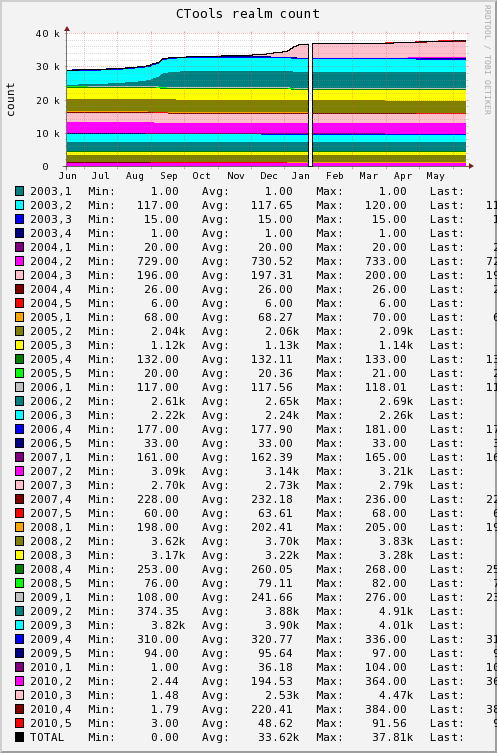

| [Login] |
ctools.umich.edu app misc | [Home]
[RCS
Log] 2010-06-14 13:32:30 Refreshing in 1311m 38s |
[Past 28 Hours] [Past Week] [Past Month] [Past Quarter] [Past Year] [Past 2 Years]
|  |
| |
means there is
no info to draw a graph for the selected time-period